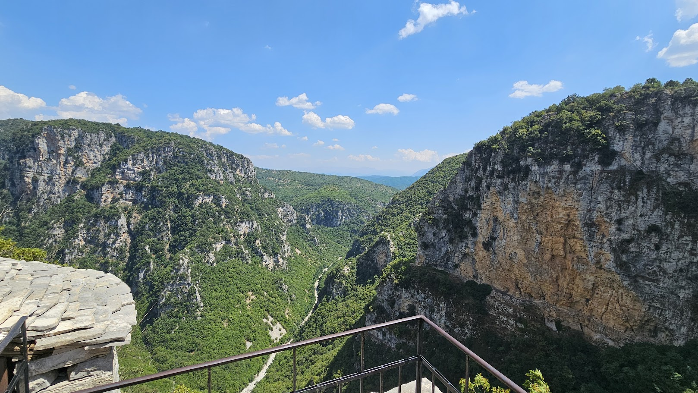
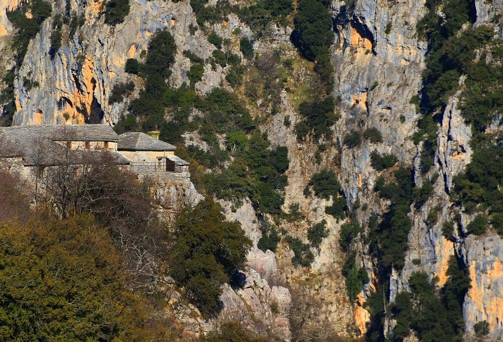

Canyon of Vikos
The Vikos Gorge is a canyon in the Pindus Mountains of northern Greece that is known for being one of the deepest canyons in the world.
In order to get to the viewpoint in the picture above (taken by yours truly), you must drive up to the village of Monodendri. From there,
there is a hiking path that takes about 50 minutes, depending on your pace. The picture I took honestly doesn't capture the scale of the canyon.
It is unbelievably large, that you feel like an ant in comparison up there.

Agia Paraskevi
Agia Paraskevi is a small monastery situated on the side of the Vikos Gorge. The viewpoint is located at the back of the monastery.
You can actually see the viewpoint in the picture above! The monastery is a great place to visit if you want to see the canyon from a different angle.
They also sell honey and special icons that are made by the nuns that live there.